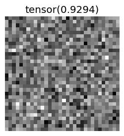
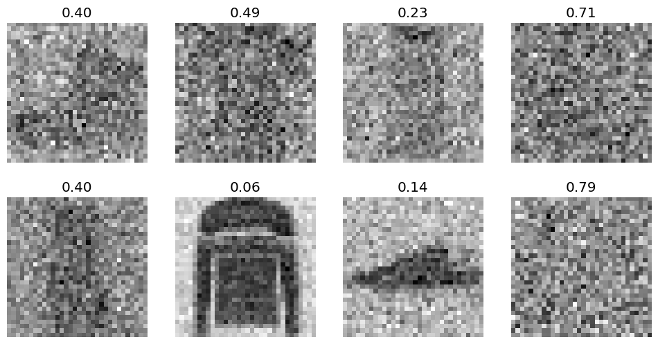
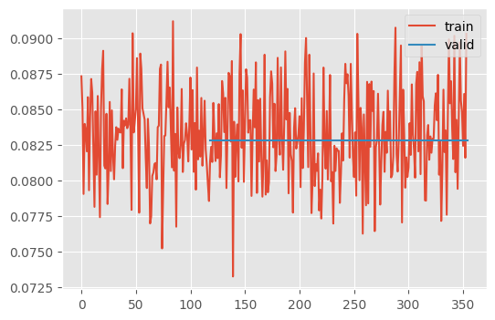
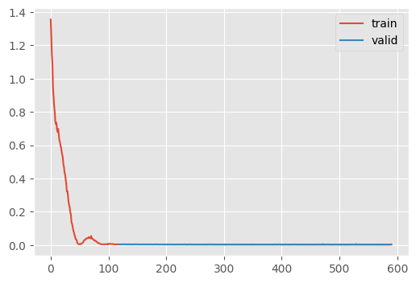
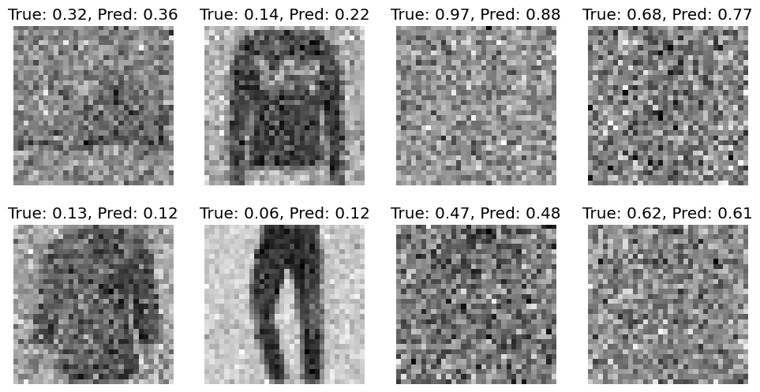
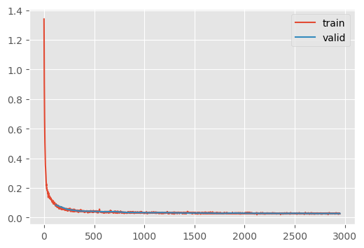
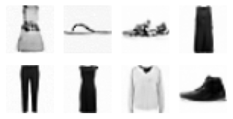

aesthetics()Predicting \(t\) as a function of \(x_t\)
Visually, it’s easy to distingush between noisy and noise-less images. Beforehand, we defined \(\epsilon_{\theta}^{(t)} (x_t, t)\) This module asks whether it is neccesary to pass \(t\) to the model at all; can the model figure it out itself?
Adapted from
We need to be empirical and understand the success conditions. We need to know if our model is good – or if its even better than random!
Note that, to use our training loop, our torch modules need at least one trainable parameter and a trainable output.
class Dummy(nn.Module):
def __init__(self):
super().__init__()
# We must have at least one parameter
self._ = nn.Linear(1, 1)
def forward(self, x_t):
bs, *_ = x_t.shape
# We must always output a trainable parameter
return torch.full((bs,), 0.5, device=x_t.device, requires_grad=True)Let’s define our dataset.
preprocess_ = torchvision.transforms.Compose(pipe)def preprocess(examples):
x_0 = [preprocess_(img) for img in examples["image"]]
x_0 = torch.stack(x_0)
((x_t, t), _) = noisify(x_0)
return {"x_t": x_t, "t": t.float()}def get_dls(bs=512):
dsd = load_dataset("fashion_mnist")
dsd["train"].set_transform(preprocess)
dsd["test"] = (
dsd["test"]
.map(preprocess, batched=True, remove_columns=["image", "label"])
.with_format("torch")
)
return DataLoaders.from_dsd(dsd, bs=bs).listify(["x_t", "t"])This was a bit annoying to set up, I had to learn the following:
- The best way to define a preprocessing function that works for both on-the-fly and before-the-fact is to make sure that it works with batches. This is because
set_transformoperates on lists of dicts, whereas map uses only dicts of lists whenbatched=True. - When preprocessing the test set (to keep it stable), I had to extend the
listify()method to take a list of columns. Otherwise, it would pull the columns from the training data, which is only known after computing them on-the-fly - When you
.map(preprocess), the data type is converted to arrow, which is not correctly handled by the default collator. As demonstrated, only the inner most value is converted to a tensor…
test = load_dataset("fashion_mnist")["test"]
ptest = test.map(preprocess, batched=True)
xb = ptest[:2]["x_t"]
cxb = default_collate(xb)
assert type(cxb) == type(cxb[0]) == type(cxb[0][0]) == list
print(f"inner most type: {type(cxb[0][0][0])}")
print(f"shape: {len(cxb), len(cxb[0]), len(cxb[0][0]), cxb[0][0][0].shape}")inner most type: <class 'torch.Tensor'>
shape: (1, 32, 32, torch.Size([2]))To fix this, we need to convert arrow to torch before sending the batch to the collate function by adding .with_format("torch") like so:
xb = ptest.with_format("torch")[:2]["x_t"]
xb.shapetorch.Size([2, 1, 32, 32])This is what it looks like:
dls = get_dls()CPU times: user 2.23 s, sys: 229 ms, total: 2.46 s
Wall time: 2.73 sr = dls.splits["test"][96]
xt, t = r["x_t"], r["t"]
show_images(xt, titles=[t])
(xb, t) = dls.peek()
n = 8
show_images(
xb[:n].squeeze(),
titles=[f"{tt.item():.2f}" for tt in t[:n]],
)
Now, we can train the dummy model.
def train(model, dls, n_epochs=20, lr=1e-2, log_periodicity=10, extra_cbs=None):
T_max = len(dls["train"]) * n_epochs
scheduler = BatchSchedulerCB(lr_scheduler.OneCycleLR, max_lr=lr, total_steps=T_max)
cbs = [
DeviceCB(),
MetricsCB(),
ProgressCB(plot=True, periodicity=log_periodicity),
scheduler,
]
if extra_cbs:
cbs.extend(extra_cbs)
learner = TrainLearner(model, dls, cbs=cbs)
learner.fit(n_epochs=n_epochs)train(Dummy(), dls, n_epochs=3)| loss | epoch | train |
|---|---|---|
| 0.083 | 0 | train |
| 0.083 | 0 | eval |
| 0.083 | 1 | train |
| 0.083 | 1 | eval |
| 0.083 | 2 | train |
| 0.083 | 2 | eval |

CPU times: user 3.94 s, sys: 1.82 s, total: 5.76 s
Wall time: 11 sNotice that loss does not change during the second epoch. (It does change a tiny bit, for whatever reason.) This is our baseline. Anything worse than this is totally useless.
We can use the same model for classification from before, just changing the number of outputs and flattening it.
class RegressionResNet(ResNetWithGlobalPoolingInitialConv):
def __init__(self, nfs=[16, 32, 64, 128, 256, 512]):
return super().__init__(nfs, 1)
def forward(self, x):
x = super().forward(x)
assert x.shape[-1] == 1
return x.squeeze()t_predictor = RegressionResNet.kaiming()
summarize(t_predictor, "ResidualConvBlock|Linear")
train(t_predictor, dls, n_epochs=5)| Type | Input | Output | N. params | MFlops |
|---|---|---|---|---|
| ResidualConvBlock | (8, 16, 28, 28) | (8, 32, 14, 14) | 14,496 | 2.8 |
| ResidualConvBlock | (8, 32, 14, 14) | (8, 64, 7, 7) | 57,664 | 2.8 |
| ResidualConvBlock | (8, 64, 7, 7) | (8, 128, 4, 4) | 230,016 | 3.7 |
| ResidualConvBlock | (8, 128, 4, 4) | (8, 256, 2, 2) | 918,784 | 3.7 |
| ResidualConvBlock | (8, 256, 2, 2) | (8, 512, 1, 1) | 3,672,576 | 3.7 |
| Linear | (8, 512) | (8, 1) | 513 | 0.0 |
| Total | 4,894,049 |
| loss | epoch | train |
|---|---|---|
| 0.203 | 0 | train |
| 0.003 | 0 | eval |
| 0.003 | 1 | train |
| 0.003 | 1 | eval |
| 0.003 | 2 | train |
| 0.002 | 2 | eval |
| 0.003 | 3 | train |
| 0.002 | 3 | eval |
| 0.003 | 4 | train |
| 0.002 | 4 | eval |

CPU times: user 16.1 s, sys: 6.03 s, total: 22.1 s
Wall time: 27.6 s(xb, t) = dls.peek(split="test")
xb, t = xb[:8, ...], t[:8, ...]
t_pred = t_predictor(xb.to(def_device))
titles = [f"True: {tt.item():.2f}, Pred: {tp.item():.2f}" for tt, tp in zip(t, t_pred)]
show_images(xb.squeeze(), titles=titles)
This is worse than what Jeremy reports, but he was using a training batch without augmentation, so he was likely learning the training data directly. Note that Jeremy uses a batch of training data and that our discrepancy is in-line with what we’re getting in the evaluation (unlike Jeremy’s, where the discrepancy is quite large at \(\approx\sqrt{0.08}\).)
with torch.no_grad():
mse = torch.nn.functional.mse_loss(t_pred.to(def_device), t.to(def_device))
msetensor(0.0037, device='cuda:0')Nice to know that I’m at the point where I can spot bugs in Jeremy’s code 🐛
eval = ImageEval.fashion_mnist(bs=256)Applying \(t\)-predictor to the diffusion model
At this point, we can add the \(t\) predicting model to the diffusion process.
class ContinuousDDPMWithTPred(ContinuousDDPM):
@only
def predict(self, learn):
(x_t, t), _ = learn.batch
with torch.no_grad():
t = t_predictor(x_t).clip(0.01, 0.99)
learn.preds = learn.model(x_t, t).sampleunet = UNet2DModel(
sample_size=(32, 32),
in_channels=1,
out_channels=1,
block_out_channels=(16, 32, 64, 128),
norm_num_groups=8,
)
ddpm = ContinuousDDPMWithTPred(βmax=0.01)
train_ddpm(
unet,
lr=1e-2,
n_epochs=25,
opt_func=partial(torch.optim.Adam, eps=1e-5),
ddpm=ddpm,
bs=512,
)| loss | epoch | train |
|---|---|---|
| 0.212 | 0 | train |
| 0.085 | 0 | eval |
| 0.064 | 1 | train |
| 0.054 | 1 | eval |
| 0.047 | 2 | train |
| 0.044 | 2 | eval |
| 0.042 | 3 | train |
| 0.042 | 3 | eval |
| 0.040 | 4 | train |
| 0.039 | 4 | eval |
| 0.037 | 5 | train |
| 0.040 | 5 | eval |
| 0.035 | 6 | train |
| 0.034 | 6 | eval |
| 0.034 | 7 | train |
| 0.034 | 7 | eval |
| 0.033 | 8 | train |
| 0.032 | 8 | eval |
| 0.032 | 9 | train |
| 0.034 | 9 | eval |
| 0.031 | 10 | train |
| 0.032 | 10 | eval |
| 0.031 | 11 | train |
| 0.030 | 11 | eval |
| 0.031 | 12 | train |
| 0.030 | 12 | eval |
| 0.030 | 13 | train |
| 0.030 | 13 | eval |
| 0.029 | 14 | train |
| 0.028 | 14 | eval |
| 0.029 | 15 | train |
| 0.030 | 15 | eval |
| 0.029 | 16 | train |
| 0.029 | 16 | eval |
| 0.028 | 17 | train |
| 0.028 | 17 | eval |
| 0.028 | 18 | train |
| 0.028 | 18 | eval |
| 0.028 | 19 | train |
| 0.028 | 19 | eval |
| 0.028 | 20 | train |
| 0.028 | 20 | eval |
| 0.027 | 21 | train |
| 0.028 | 21 | eval |
| 0.027 | 22 | train |
| 0.027 | 22 | eval |
| 0.027 | 23 | train |
| 0.027 | 23 | eval |
| 0.027 | 24 | train |
| 0.027 | 24 | eval |

CPU times: user 10min 1s, sys: 3min 49s, total: 13min 50s
Wall time: 11min 29sddim_t_pred
ddim_t_pred (model, sz=(16, 1, 32, 32), device='cpu', n_steps=100, eta=1.0, noisify=<function ddim_noisify>)
x_0 = ddim(unet, sz=(256, 1, 32, 32))
show_images(x_0[:8, ...].squeeze(), imsize=1.2)100%|████████████████████████████████████████████████████████████████████████████████████████████████████████████████████████████████████████| 99/99 [00:03<00:00, 31.74time step/s]
x_0.min(), x_0.max()(tensor(-0.5532, device='cuda:0'), tensor(0.6188, device='cuda:0'))eval.fid(x_0)147.68310546875Compare to 789.25 without predicting \(t\) (and 158.81 for a real batch). So, the metrics are much better but it doesn’t look better?